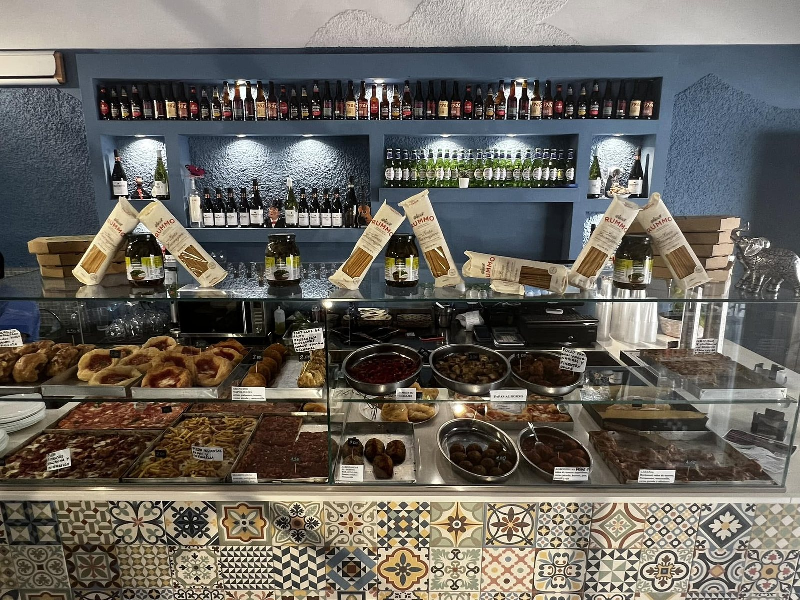
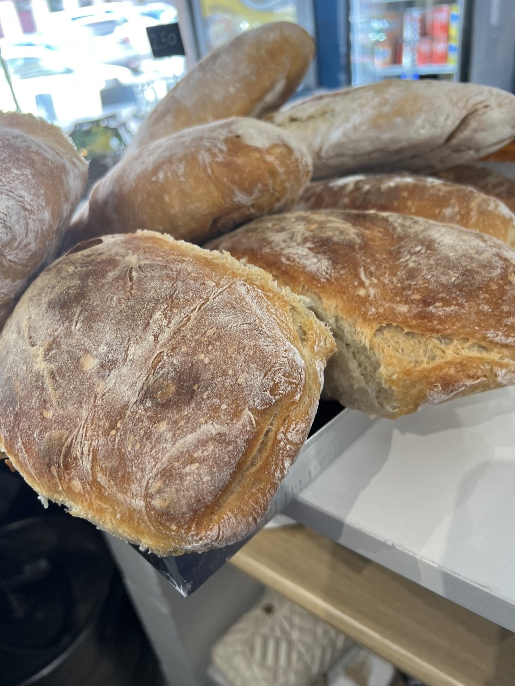
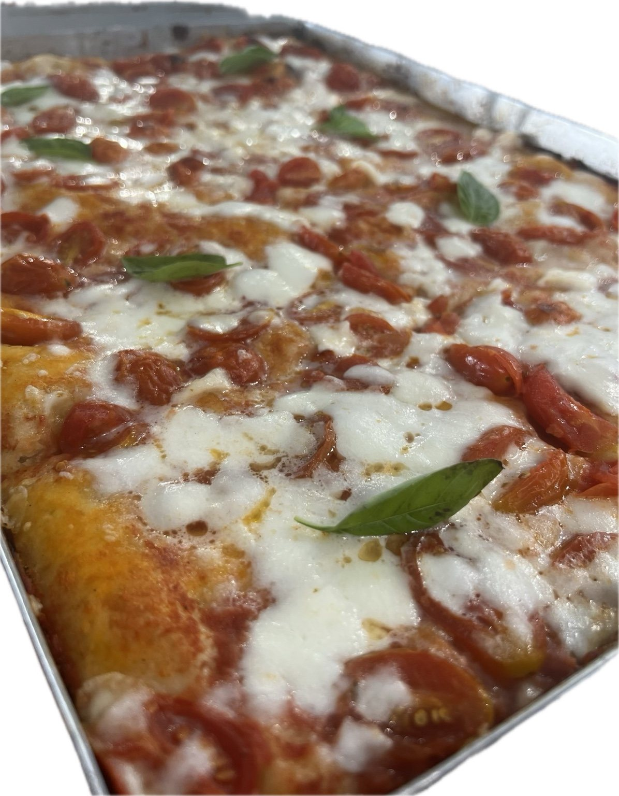
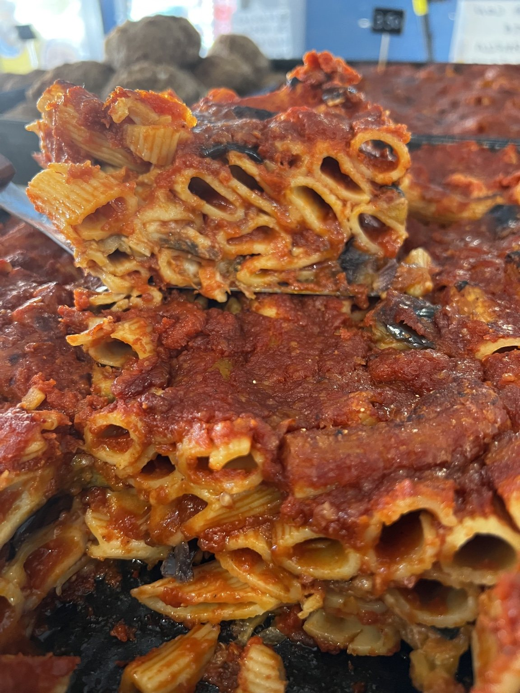
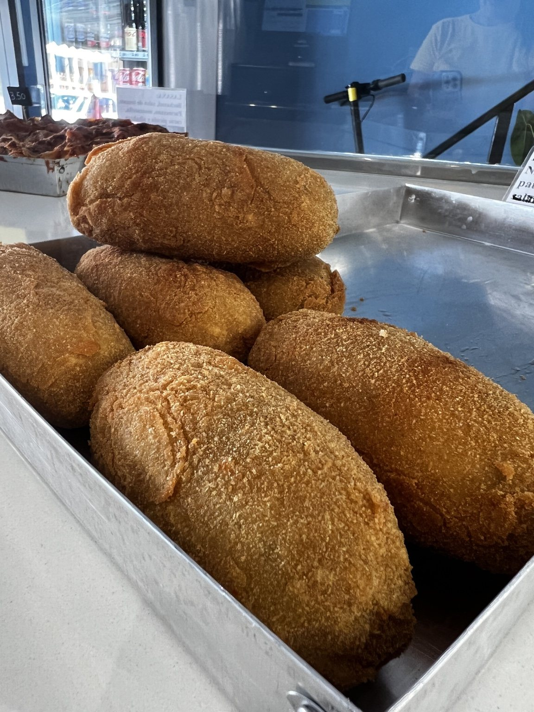
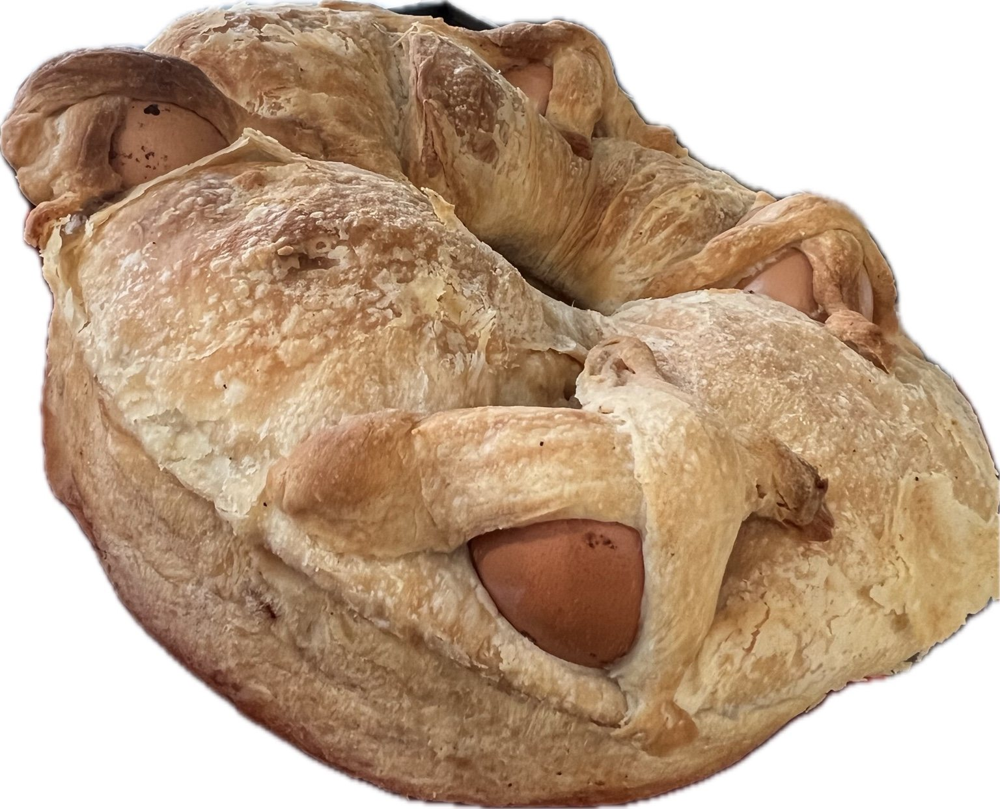

Preparato ogni giorno
Produzione fresca, dal forno alla vetrina.

Autentica tradizione napoletana
Pizza al taglio, pane cafone, buffet, frittatine napoletane, primi piatti e specialità della cucina napoletana preparate ogni giorno a Las Galletas, Tenerife.
La nostra identità
Una rosticceria autentica dove pizza, fritti, cucina e pane raccontano la tradizione con ingredienti selezionati e lavorazione artigianale.
Produzione fresca, dal forno alla vetrina.
Sapori e specialità della cucina napoletana.
Soluzioni per compleanni, feste e aziende.

Specialità della casaPane Cafone Napoletano
Il nostro pane artigianale merita uno spazio tutto suo. Preparato secondo la tradizione e disponibile fino a esaurimento.
Prenota il paneBuffet ed eventi
Prepariamo buffet su ordinazione per compleanni, riunioni, feste private ed eventi aziendali. Scegli il numero di persone e raccontaci cosa desideri.
WhatsApp +34 666 196 026 è riservato alle richieste buffet. Non si accettano ordini giornalieri tramite WhatsApp.




Vieni a trovarci
Rosticceria Napoletana
Avenida Fernando Salazar González 13A
38630 Las Galletas, Tenerife